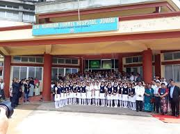

Health Facilities
Dr Norman Tunnel Hospital
"DR NORMAN TUNNEL HOSPITAL JOWAI Non Governmental Organization is located in Jowai Meghalaya . DR NORMAN TUNNEL HOSPITAL JOWAI is registered as a Society at SHILLONG of state Meghalaya with Ngo unique registration ID 'ML/2013/0059651' . The NGO registration is done by Registrar of Societies with registration number NO. SR/DNTHJ-45/81 of 1981 on the date of 02-05-1981, Its parent ORganaisation is PaulFoundation. The Chairman of DR NORMAN TUNNEL HOSPITAL JOWAI is ADMINISTRATIVE OFFICER and Chief functionary officer is MEDICAL SUPERINTENDENT."
Civil Hospital jowai
"Jowai the
District Headquarter of Jaintia Hills District of Meghalaya. Jaintia Hills District is one of the seven
district of Meghalaya. Jowai Civil Hospital is in the Urban area of Jowai which is situated about 1km of
the Jowai main Bazar or from the office of the Deputy Commissioner of the Jaintia Hills District.
At present there is no provision for the separate ward of the patients. The patients requiring other
medical services and develop Mental Illness are treated. Any patients who has mental problems and
controllable is hospitalized in any of the ward.
As of now there is constraint in the spare to accommodate any bed or any ward. Hence the Government of
Meghalaya has been developing the site for New Civil Hospital Jowai. The Psychiatric Department of the
Civil Hospital Jowai would be constructed in second floor of the New Civil Hospital complex. For the
development of Psychiatric Wing in the Civil Hospital Jowai Government of India has already funded one
tine sanction Rs. 46.38 Lakhs
"